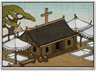

Requires
- Religions:

Enables
- Buildings: 

Basic Building Statistics (can be modified by difficulty level, arts, skills, traits and retainers)
- Cost: 850
- +1 happiness for the Christian population
- +2% to town growth from all buildings
- Spreads Christianity to neighbouring provinces (+2 religious zeal)
- Converts the populace to Christianity (+2 religious zeal)
- Enables recruitment of Rank 1 missionaries
Clan Effects
- Improves the rate at which chi arts are mastered: +5%
- Each Christian chain building enables you to sustain one additional missionary (to a maximum of 5)
Description
Hear the Word of the Lord.
The humility of this structure belies its spiritual power. The missionaries that go forth from here are capable of converting the people to Christianity, and of spreading sedition among enemies. The building itself is more than a meeting place: like all churches, the design formally codifies the details of the faith. The Jesuit missionary Francis Xavier brought Christianity to Japan in 1549. Despite language difficulties, he was modestly successful in communicating Christian ideas to his new flock. The Jesuits were a relatively new, vigorous order within the Catholic Church, formed to fight the Protestant ideas of Martin Luther. As "shock troops" of the Reformation, they had both a martial and scholarly air to them that was undoubtedly appealing to samurai sensibilities. However, Christianity faced much hostility because it did not honour ancestors. Indeed, missionaries told their Japanese audience that their ancestors were damned or, at best, virtuous pagans. Despite these problems, the Christian community probably numbered around 100,000 people by 1579. Francis Xavier would eventually be canonized as a saint for his efforts in the far-flung foreign lands. He is still a Catholic patron saint of missionaries.